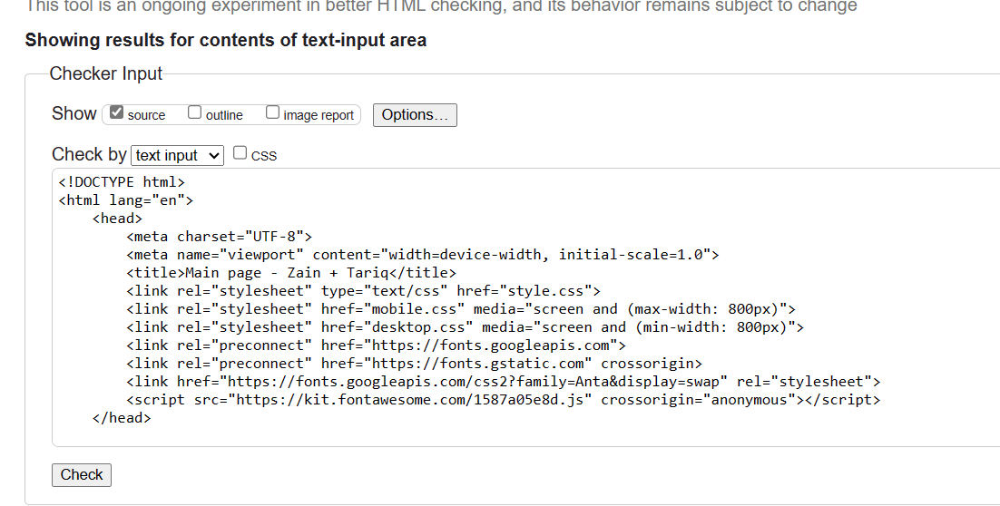
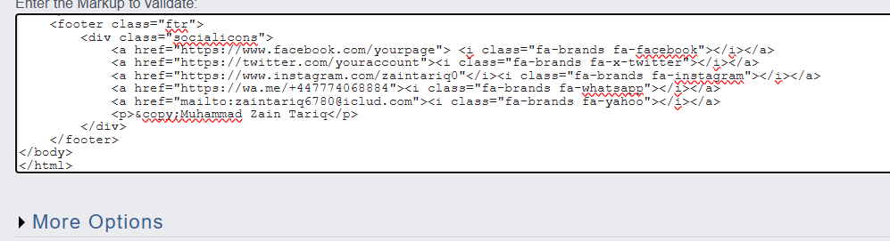

Hey there! My name is Muhammad Zain Tariq, and in this module, I focused on learning web development. It was a really good experience for me. The instructor was very supportive, which made a big difference. They helped me understand programming in an easy-to-grasp way. Overall, my experience was very positive. The instructor' support was key in helping me and my classmates navigate through the learning process. They were patient and always there to assist us whenever we needed help. The learning process went smoothly. We didn't face any major issues, and everything was quite seamless. By the end of the module, I felt confident in my understanding of web development concepts. In summary, I had a great time learning web development in this module. The instructor' support played a huge role in making it a positive experience for me. I'm grateful for the knowledge gained and feel ready to apply it in real-world scenarios.

